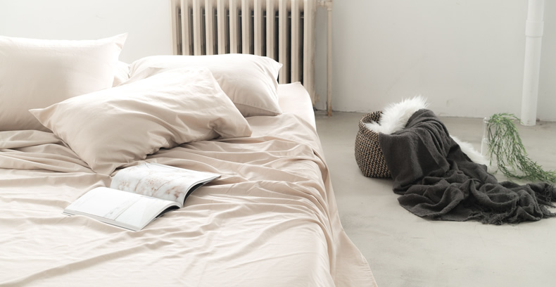

With Chores Adding Up At Home These Sheets Will Eliminate Your Ever Growing Mountain Of Laundry

By Kim Fields | Oct 26th 2020
With the kids doing school from home, husband working remotely, and all of your routines thrown out the window, has your mental load gotten overwhelming?
There’s so many new things to remember and worry about. As the “knower of all,” Stay-At-Home Moms have been finding their budgets tighter, stress levels higher, and relief harder to find.
Not only is there less time in the day for you to get normal things done, but with more and more emphasis on hygiene at home, the challenges start to seem insurmountable.
You’ve essentially become a maid, a teacher, a referee, not to mention the germ-police and round-the-clock caregiver...there’s just not enough time in the day!
Moms across the board are finding themselves exhausted by the extra mental stress and one of the main things they find taking hours out of their weeks is laundry.
Mountains and mountains of clothes, towels, blankets, and sheets…
The kids run around all day jumping on your bed, smearing peanut-butter fingers and jelly-covered faces on the pillows, snuggling in sheet forts with the ever shedding cat…
Spreading all of the oils, dandruff, germs and filth that bacteria love to feed off of and grow on...
Giving you a headache and a half as you find yourself struggling to keep up with the housework that never seems to end.
Moms At Home Are Doing More Than Ever
Nancy was a stay-at-home Mom doing over 10 loads of laundry a week.
With extra time spent doing indoor activities, crumbs being ground into beds day in and day out, dirt-covered yawning kids sprawling out on top of the sheets for naps, and two pets constantly jumping from one sleeping surface to another…
She couldn’t help but continuously wash all of the sheets in the house.
But even with all of her extra effort, climbing into bed at night still was not bringing a sense of relief...and she was waking up more tired each morning. She’d always been prone to sweating at night and although she bought what she thought were high-quality sheets, they started to show wear-and-tear after just a few weeks of these extra tosses in the machine.
Her kids were starting to complain about their sheets being itchy all the time and changing up the laundry detergent and fabric softeners wasn’t helping...it was only making things worse. Not to mention trying to find one that would work was taking a lot of time and money…
With no end in sight.
Check For Available Discounts
Fight Bacteria Growth(5)(6)
Temperature Regulating(7)
Prevents The Growth Of
Odor-Generating Bacteria(9)
Change This To Save Yourself Hours A Day
Until she found the solution that not only cut her laundry in half but also had her family sleeping better than ever before.
“They feel so clean and fresh even after one week. My husband sweats a lot during the night and our old sheets would stink after a couple of days. We are on day 9 and they are still fresh and look so clean. I would definitely recommend these sheets.” - Laurie L
“Absolutely amazing! No odor! Less laundry! They also have a slightly cooling effect.” -Iryna K
“LOVE these sheets. They're insanely comfortable and wonderful to sleep in. I sleep hot and have had no issues with these sheets making me sweat or getting wet. I bought the blue and the gray as well as an extra set of pillowcases. I'll be buying another set ASAP!” - Dan W
Miracle Sheets have been helping thousands of customers just like Nancy to sleep better, sweat less, save money, and do less laundry.(1)
While most beds are teeming with bacteria and allergens that may reduce your quality of sleep and overall wellness, Miracle Sheets are using new technology that gives your family sheets that clean themselves.(2)

What’s Miracle Sheets Secret?(3)
They’ve done this by starting with high-quality cotton and a percale weave.
But, unlike many well-known sheet brands, they didn’t stop there.
No, to 95% breathable and beautiful cotton, they’ve added 5% all-natural silver.
Silver infused fabrics are a new technology that has been proven to:
- Regulate body temperature by sorting and releasing body heat(4)
- Support healthy skin and general hygiene by fighting issue-causing bacteria(11)
- Keep themselves cleaner with antimicrobial properties
- Fight unwanted dust mites and germs(12)
Unlike most fabrics that collect moisture and create a perfect environment for quickly growing bacteria, Miracle Sheets use positively charged silver ions to attract and destroy these bacteria, preventing their growth before they can create odors, stains, and filth in your bed.(13)
Alleviate your mental overload today by switching to Miracle Sheets! Watch your energy and water bills go down as you find that your sheets are staying fresher, longer...(14)
You can wash your sheets up to 3x less(1) while knowing your skin will be cleaner, you will be cooler all night, and you will wake up refreshed and ready to go!
Regardless of the extra time that you, furry friends, and active kids may now be spending in bed, you can rest easy knowing that your sheets are doing half of the work for you,taking one concern off of your weekly mental checklist.
Check For Available Discounts
Long-Lasting, Luxurious, and Light
Nancy can’t get over the change that Miracle Sheets have brought to her family’s life.
And neither can many others:
“Impressed with the longevity between washings. Sheets stay crisp and overall wrinkle-free Definitely will purchase this again as well as recommend the product.” -Tammie J
“I was skeptical when I first heard about silver being woven into the fabric to prevent bacteria,etc... but I'll tell you what, it's pretty dang incredible. I (embarrassingly) sweat a lot when I sleep so I go through sheets because they get stained, and I have to frequently wash them, but these have been going strong for 2 weeks without the wash! FYI - I usually wash my sheets once a week but this was my experiment... highly recommend these!” - Charles M
“These are the most comfortable sheets I've ever owned! Much cooler sleep at night, and they still feel as fresh as the day I put them on the bed.” - Austin V
If you, like many of our other satisfied customers, have found yourself constantly buried in laundry, tossing and turning at night, or waking up and running to wash off in the shower…
It’s time for you to add just one ingredient to your night time routine.
And all of this luxury does not come at a high-end price. When compared to similar quality sheet sets, Miracle Sheets are a surprisingly affordable option! Not to mention the money you’ll be saving on your water and energy bills.
We’re so sure that you will join the thousands of 5-StarReviews that we are giving you the chance to try them for 30 Nights Risk Free.
Make your bed and enjoy a whole month of cooler and cleaner sleep. If you’re not satisfied with your experience we will ask zero questions and refund your payment.
Take your bed back from the bacteria, mites, and sweat while also giving yourself relief from the endless laundry and restless nights.
Relieve yourself of the mental overload right now, by switching to Miracle Sheets with this limited time offer.
As always, every Miracle Brand purchase is backed by a 100% Money Back Guarantee.
Try Miracle Brand Sheets for 30 nights. Donʼt like it? Get a 100% refund. No questions.

Try Miracle Brand Sheets for 30 nights. Donʼt like it? Get a 100% refund. No questions.
This limited time deal is in high demand and stock keeps selling out.
CHECK AVAILABILITY
This special offer is valid until